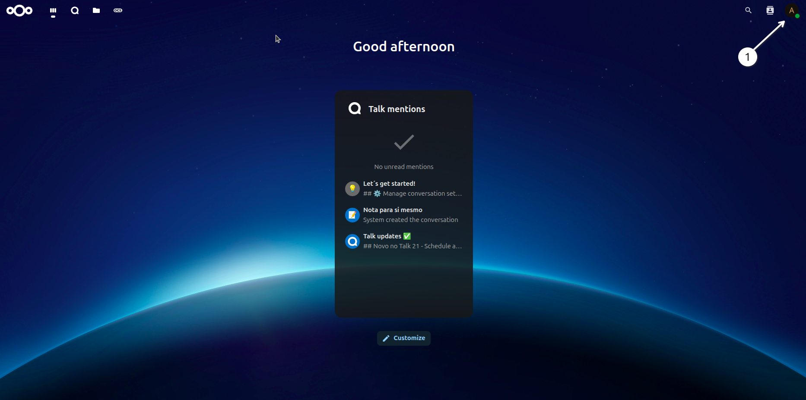
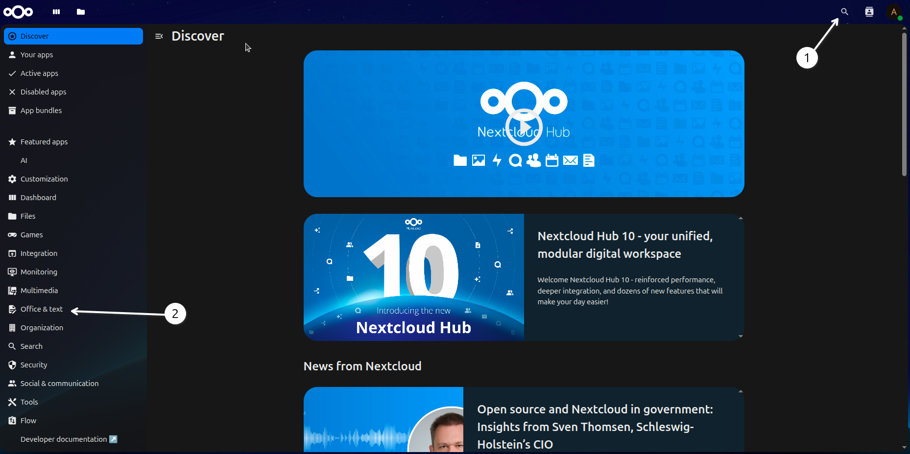
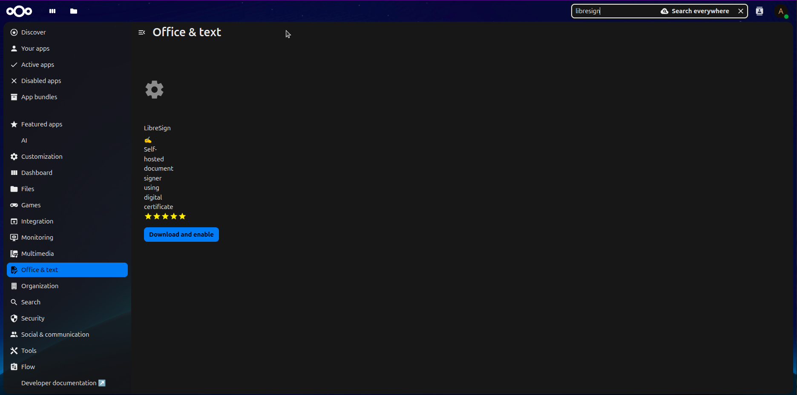
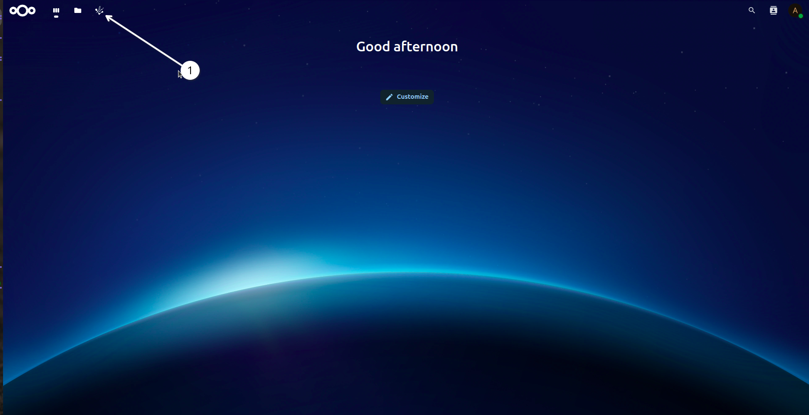
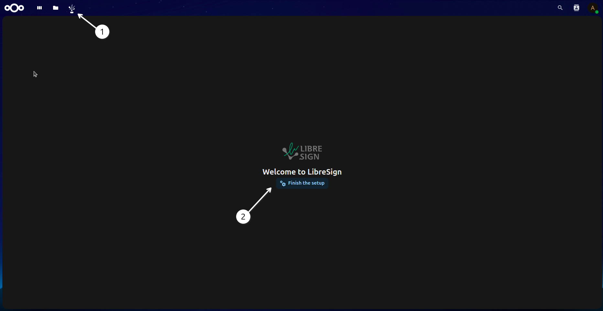
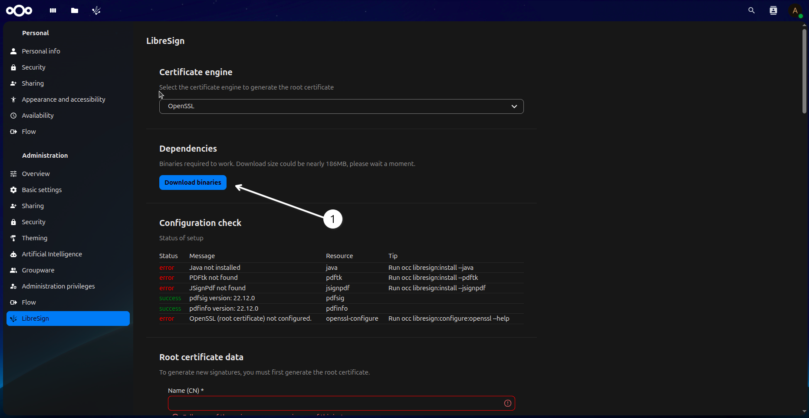
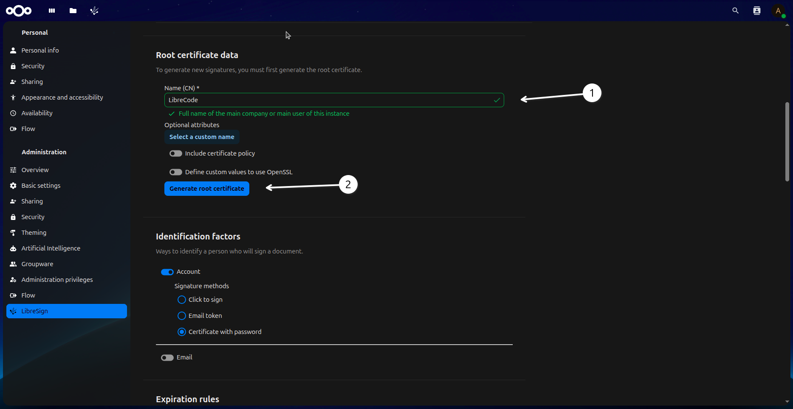
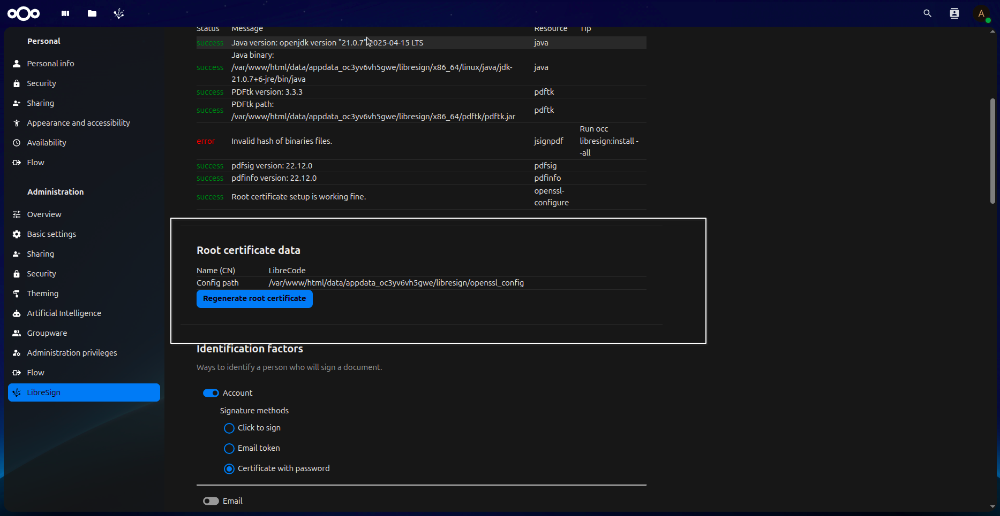
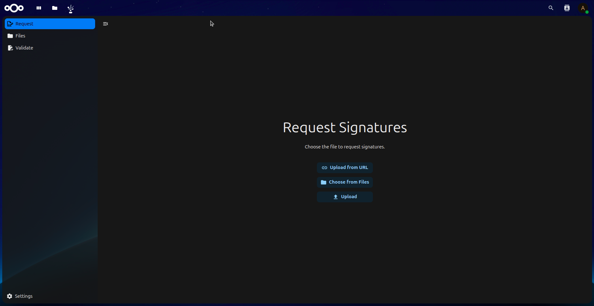

Installation
Get start
Install libresign app
Click on your profile picture in the top right corner of the screen and select “+ Apps”.
 Search for “libresign” in the search bar and select the app from the list.

- This screen you can find two way to find the app:
1 - Search bar
2 - Search on the categories “Office & Text”
Click on the “Download and enable” button to install the app.
 LibreSign is installed and enabled. You can now access it from the “Apps” section in your profile menu.
 1 - In the top of menu you can see the app icon.
Click on the LibreSign icon to open the app.
 1 - In the top of menu you can see the app icon.
2 - Here you will finish the setup of the app. Cleick on the “Finish setup” button to continue.
Download the dependencies for LibreSign.
 1 - Click on the “Download binaries” button to download the required files.
In this screen you will configurate your certificate data.
 1 - Here you will configure your certificate data.
2 - Click on the “Generate root certificate” button to save your configuration.
 Here you can see your certificate data.
After this configurates you will click the libresign icon in the top menu to access the app again.
 There it is! Now you can use LibreSign to sign your documents.